1.叙述
java security包下有很多加密算法类，我们可以很简单的调用它们。他们虽然功能很全，但是使用起来步骤有些繁琐。我在这里封装来一些常用的加密算法及他们常用的一些方法，来简化代码。
工具类结构如下：
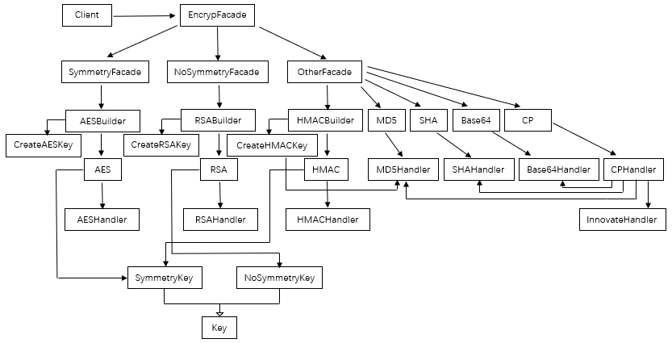
调用步骤：
1.Client为调用类，统一调用加密门面对象(EncrypFacade),通过加密门面对象的对应方法，可以选择构建出对称加密门面对象(SymmetryFacade)、非对称加密门面对象(NoSymmetryFacade)、其他加密门面对象(OtherFacade)。
2.对称加密和非对称加密需要密钥，在构建时先生成密钥，然后再构建对象（HMAC比较特殊，是需要公钥加密的哈希算法），这些对象构建使用门面对象中的builder结尾的方法。而其他加密算法则直接使用OtherFacade对象的对应方法实现加密解密，OtherFacade会根据具体方法调用具体加密对象的方法，这些加密对象再调各自的Handle。
3.使用builder方法得到加密对象后调用具体方法实现加密解密，这些方法在各自调用的Handler中。
优点：
虽然我们在开发中一般不会用到多种加密算法，但是各个类的成员都做了延时加载，在调用时才会生成实例对象，所以不用担心类膨胀。相反的，我们更容易拓展它。
2.示例
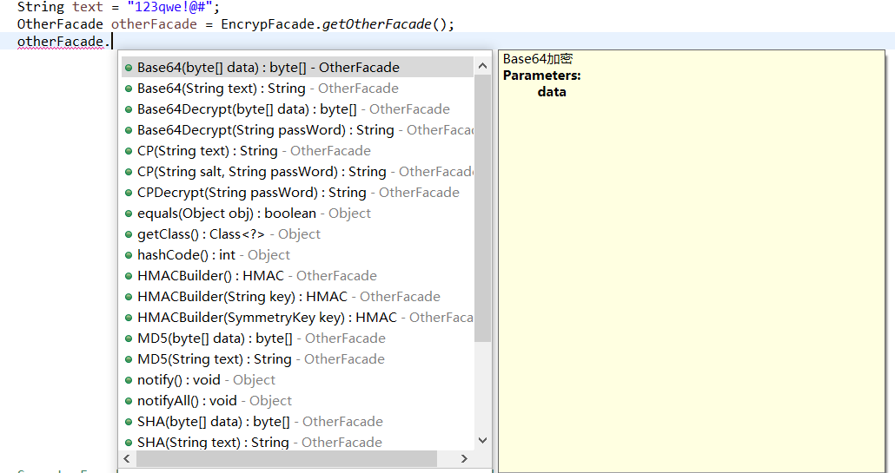
2.1 Base64的使用
String text = "123qwe!@#";
OtherFacade otherFacade = EncrypFacade.getOtherFacade();
String base64 = otherFacade.Base64(text);
System.out.println("base64加密后的密文为："+base64);
String base64Decrypt = otherFacade.Base64Decrypt(base64);
System.out.println("base64解密后的明文为："+base64Decrypt); byte[] data = "123qwe!@#".getBytes();
System.out.println("data："+Arrays.toString(data));
OtherFacade otherFacade = EncrypFacade.getOtherFacade();
byte[] base64 = otherFacade.Base64(data);
System.out.println("Base64加密字节数组结果为："+Arrays.toString(base64));
byte[] base64Decrypt = otherFacade.Base64Decrypt(base64);
System.out.println("Base64解密字节数组结果为："+Arrays.toString(base64Decrypt));
代码1：
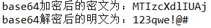
代码2：
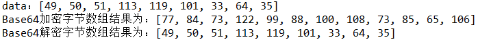
2.2 MD5的使用
String text = "123qwe!@#";
OtherFacade otherFacade = EncrypFacade.getOtherFacade();
String md5 = otherFacade.MD5(text);
System.out.println("md5加密后的密文为："+md5); byte[] data = "123qwe!@#".getBytes();
System.out.println("data："+Arrays.toString(data));
OtherFacade otherFacade = EncrypFacade.getOtherFacade();
byte[] md5 = otherFacade.MD5(data);
System.out.println("md5加密字节数组结果为："+Arrays.toString(md5));
代码1：
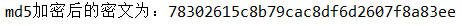
代码2：
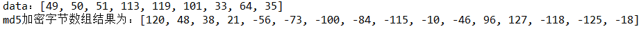
2.3 SHA的使用
String text = "123qwe!@#";
OtherFacade otherFacade = EncrypFacade.getOtherFacade();
String sha = otherFacade.SHA(text);
System.out.println("SHA加密后的密文为："+sha);byte[] data = "123qwe!@#".getBytes();
System.out.println("data："+Arrays.toString(data));
OtherFacade otherFacade = EncrypFacade.getOtherFacade();
byte[] sha = otherFacade.SHA(data);
System.out.println("SHA加密字节数组结果为："+Arrays.toString(sha));代码1：
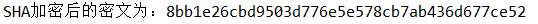
代码2：
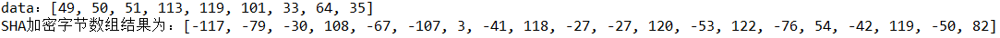
2.4 CP的使用
这个加密算法为本人自创的一种算法，它其实就是结合了其他几种加密的杂合版。
下面这个实例为可解密的CP加密，加密时先使用base64，再用innovate加密，而解密则是先innovate再base64，innovate是我随便启动名字，至于这个算法，我找度娘要的。而innovate加密算法我并没有在门面对象中公开。
String text = "123qwe!@#";
OtherFacade otherFacade = EncrypFacade.getOtherFacade();
String cp = otherFacade.CP(text);
System.out.println("CP加密后的密文为："+cp);
String cpDecrypt = otherFacade.CPDecrypt(cp);
System.out.println("CP解密后的明文为："+cpDecrypt);结果：
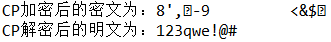
下面这个实例为不可逆加密，它会使用4种算法多重加密，有MD5、Base64、SHA、innovate，通过自定义的内部算法用盐值来确定这几种算法的加密顺序，也就是说加密的明文相同，盐值不同也会导致密文不同。
String text = "123qwe!@#";
String salt = "userName";
OtherFacade otherFacade = EncrypFacade.getOtherFacade();
String cp = otherFacade.CP(salt, text);
System.out.println("CP加密后的密文为："+cp);结果：
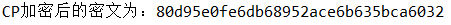
2.5 HMAC的使用
String text = "123qwe!@#";
OtherFacade otherFacade = EncrypFacade.getOtherFacade();
HMAC hmac1 = otherFacade.HMACBuilder();
SymmetryKey key = hmac1.getKey();
System.out.println("HMAC生成的key为："+key.getPublicKey());
String encrypt1 = hmac1.Encrypt(text);
System.out.println("A使用HMAC加密结果为："+encrypt1);
//模拟A将key传递给B
HMAC hmac2 = otherFacade.HMACBuilder(key);
//HMAC hmac2 = otherFacade.HMACBuilder(key.getPublicKey());//同上
String encrypt2 = hmac2.Encrypt(text);
System.out.println("B使用HMAC加密结果为："+encrypt2);byte[] data = "123qwe!@#".getBytes();
System.out.println("data："+Arrays.toString(data));
OtherFacade otherFacade = EncrypFacade.getOtherFacade();
HMAC hmac1 = otherFacade.HMACBuilder();
SymmetryKey key = hmac1.getKey();
System.out.println("HMAC生成的key为："+key.getPublicKey());
byte[] encrypt1 = hmac1.Encrypt(data);
System.out.println("A使用HMAC加密字节数组结果为："+Arrays.toString(encrypt1));
//模拟A将key传递给B
HMAC hmac2 = otherFacade.HMACBuilder(key);
//HMAC hmac2 = otherFacade.HMACBuilder(key.getPublicKey());//同上
byte[] encrypt2 = hmac2.Encrypt(data);
System.out.println("B使用HMAC加密字节数组结果为："+Arrays.toString(encrypt2));
代码1：
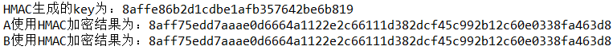
代码2：
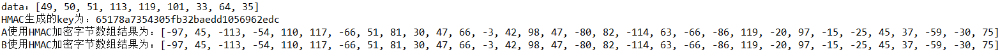
2.6 AES的使用
String text = "123qwe!@#";
SymmetryFacade symmetryFacade = EncrypFacade.getSymmetryFacade();
AES aes1 = symmetryFacade.AESBuilder();
SymmetryKey key = aes1.getKey();
System.out.println("AES生成的key为："+key.getPublicKey());
String encrypt = aes1.Encrypt(text);
System.out.println("A使用AES加密结果为："+encrypt);
//模拟A将key传递给B
AES aes2 = symmetryFacade.AESBuilder(key);
//AES aes2 = symmetryFacade.AESBuilder(key.getPublicKey());//同上
String decrypt = aes2.Decrypt(encrypt);
System.out.println("B使用AES解密结果为："+decrypt);byte[] data = "123qwe!@#".getBytes();
System.out.println("data："+Arrays.toString(data));
SymmetryFacade symmetryFacade = EncrypFacade.getSymmetryFacade();
AES aes1 = symmetryFacade.AESBuilder();
SymmetryKey key = aes1.getKey();
System.out.println("AES生成的key为："+key.getPublicKey());
byte[] encrypt = aes1.Encrypt(data);
System.out.println("A使用AES加密结果为："+Arrays.toString(encrypt));
//模拟A将key传递给B
AES aes2 = symmetryFacade.AESBuilder(key);
//AES aes2 = symmetryFacade.AESBuilder(key.getPublicKey());//同上
byte[] decrypt = aes2.Decrypt(encrypt);
System.out.println("B使用AES解密结果为："+Arrays.toString(decrypt));代码1：
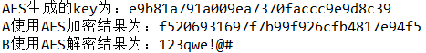
代码2：
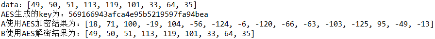
2.7 RES的使用
我们先来了解下数字签名和非对称加密过程
1.数字签名：
数字签名是笔迹签名的模拟，用于保证信息传输的完整性、发送者身份认证，以及防止交易中抵赖行为等。
公钥签名体制的基本思路是：
①发送者A用自己的私钥加密信息，从而对文件签名
②将签名的文件发送给接受者B
③B利用A的公钥（可以从CA机构等渠道获得）解密文件，从而验证签名。
2.非对称加密过程
A与B之间要进行加密通信，非对称加密流程是：
①A与B都要产生一对用于加密和解密的加密密钥和解密密钥
②A生成一对密钥，将公用密钥向其他方公开。将公钥传送给B，将私钥自己保管。B将公钥传送给A，将私钥自己保管。
③A发送消息给B时，先用B的公钥对信息进行加密，再将密文发送给B
④B收到A发来的消息时，用自己的私钥解密
注意：A和B都只能用其专用私钥加密由其公钥加密后的任何信息。
String text = "123qwe!@#";
NoSymmetryFacade noSymmetryFacade = EncrypFacade.getNoSymmetryFacade();
//512为公钥长度，理论上长度越长越难被破解，如果不填参数默认为1024，若小于512则使用默认值
RSA res1 = noSymmetryFacade.RESBuilder(512);
NoSymmetryKey key1 = res1.getKey();
RSA res2 = noSymmetryFacade.RESBuilder(512);
NoSymmetryKey key2 = res2.getKey();
//交换publicKey
res1.setKey(key2);
res2.setKey(key1);
//res1.setKey(key2.getPublicKey());//同上
//res2.setKey(key1.getPublicKey());//同上
//A先使用B的公钥加密，然后再使用自己的私钥加密
String privateEncrypt = res1.privateEncrypt(res1.publicEncrypt(text));
//生成签名
String sign1 = res1.sign(privateEncrypt);
System.out.println("A的RSA公钥为："+key1.getPublicKey());
System.out.println("B的RSA公钥为："+key2.getPublicKey());
System.out.println("A的RSA签名为："+sign1);
System.out.println("A使用RSA加密数据为："+privateEncrypt);
//B得到签名及加密数据
//先验证签名，判断数据是否被改动过
if(res2.verify(privateEncrypt, sign1)){
//然后解密
//先用A的公钥解密，再用B的私钥解密，顺序与加密相反
String publicDecrypt = res2.privateDecrypt(res2.publicDecrypt(privateEncrypt));
System.out.println("B使用RSA解密数据为："+publicDecrypt);
}byte[] data = "123qwe!@#".getBytes();
System.out.println("data："+Arrays.toString(data));
NoSymmetryFacade noSymmetryFacade = EncrypFacade.getNoSymmetryFacade();
//512为公钥长度，理论上长度越长越难被破解，如果不填参数默认为1024，若小于512则使用默认值
RSA res1 = noSymmetryFacade.RESBuilder(512);
NoSymmetryKey key1 = res1.getKey();
RSA res2 = noSymmetryFacade.RESBuilder(512);
NoSymmetryKey key2 = res2.getKey();
//交换publicKey
res1.setKey(key2);
res2.setKey(key1);
//res1.setKey(key2.getPublicKey());//同上
//res2.setKey(key1.getPublicKey());//同上
//A先使用B的公钥加密，然后再使用自己的私钥加密
byte[] privateEncrypt = res1.privateEncrypt(res1.publicEncrypt(data));
//生成签名
byte[] sign1 = res1.sign(privateEncrypt);
System.out.println("A的RSA公钥为："+key1.getPublicKey());
System.out.println("B的RSA公钥为："+key2.getPublicKey());
System.out.println("A的RSA签名为："+Arrays.toString(sign1));
System.out.println("A使用RSA加密数据为："+Arrays.toString(privateEncrypt));
//B得到签名及加密数据
//先验证签名，判断数据是否被改动过
if(res2.verify(privateEncrypt, sign1)){
//然后解密
//先用A的公钥解密，再用B的私钥解密，顺序与加密相反
byte[] publicDecrypt = res2.privateDecrypt(res2.publicDecrypt(privateEncrypt));
System.out.println("B使用RSA解密数据为："+Arrays.toString(publicDecrypt));
}代码1：
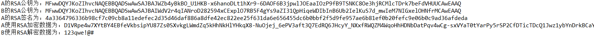
代码2：
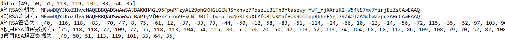
下载地址：